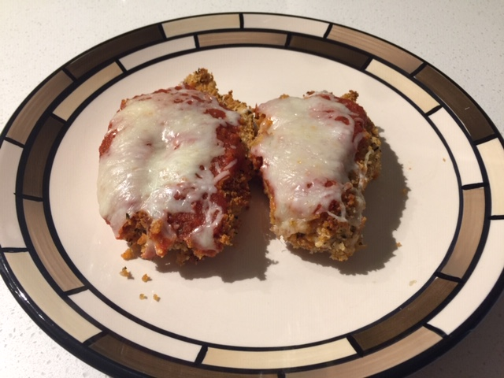

Baked is Better than Fried!
Parmesan Chicken (⏰: 45 minutes)
← Back to Recipe Index 🍽

Ingredients:
- 3 Large Chicken Breasts
- 3 Tbsp Butter or Margarine
- 1 Cup Whole Wheat Panko
- 1/4 Cup Parmesan Cheese
- 1 Tsp Dried Basil
- 1 Tsp Oregano Leaves
- 1/2 Jar (350mL) Pasta Sauce
- 3/4 Cup Mozzarella Cheese
Preparation:
- Preheat oven to 450°F
- Shred Cheeses (Keep Separate)
Directions:
- Combine breadcrumbs, parmesan cheese, and spices in a bowl.
- Melt butter in another bowl or small pot.
- Cut each chicken breast in half depth-wise creating two thinner chicken breast shaped pieces.
- Prepare an assembly line-like structure with the melted butter, breadcrumb mixture, chicken on a cutting board, and a glass baking dish.
- Dip each chicken breast in the butter, then the breadcrumbs, and lay in the glass dish. Make sure that chicken breasts are not overlapping in the glass dish.
- Bake for 20 minutes.
- Spoon a portion of the tomato sauce onto each chicken breast and top with a portion of mozzarella cheese.
- Bake for 5 more minutes or until cheese is melted.
- Enjoy!
← Back to Recipe Index 🍽